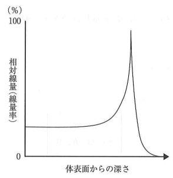
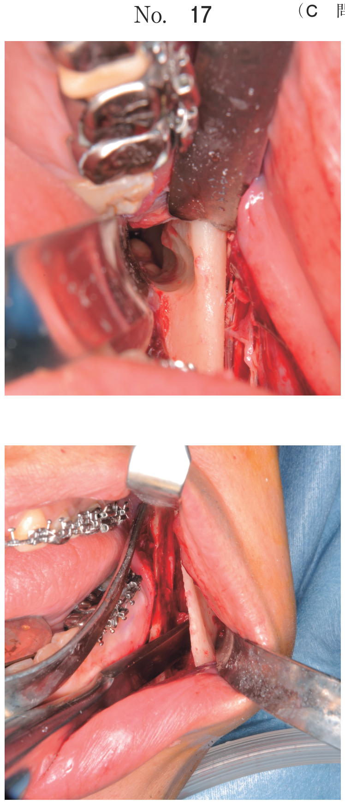

外部照射
外部照射とは
外部照射装置を用いて体の外部から放射線を照射する方法。組織内照射（密封小線源治療）と対比される。
外部照射法の分類
| 分類 | 方法 |
|---|---|
| 外部照射法 | エックス線照射、電子線照射、粒子線治療、IMRT |
| 密封小線源治療 | 組織内照射、腔内照射、モールド照射 |
外部照射装置
リニアック（直線加速装置）
Linear acceleratorの略。外部照射に使用される代表的な治療装置。
- エックス線と電子線を発生させることができる
- 精度の高いコリメータ（絞り）で照射野を調整
- 多方向から照射可能（回転照射）
外部照射に使用する放射線
| 放射線 | 特徴 | 適応 |
|---|---|---|
| エックス線 | 体表近くで最大、深部で徐々に低下 | 深部腫瘍、広範囲照射 |
| 電子線 | 一定深度まで高線量、その後急激に低下 | 表在性腫瘍（口唇癌など） |
| 陽子線 | ブラッグピーク（深部で急上昇） | 深部腫瘍、正常組織保護 |
| 重粒子線 | ブラッグピーク＋高LET | 難治性腫瘍 |
| アルファ線 | 透過力が弱い | 外部照射には使用しない |
陽子線・重粒子線は深部で線量が急激に上昇し、その後急激に低下する特徴的な曲線（ブラッグピーク）を示す。
→ 腫瘍に高線量を集中させ、周囲正常組織への被曝を最小限に抑えられる
IMRT（強度変調放射線治療）
Intensity Modulated Radiation Therapyの略。
- X線の強度を連続的に変化させながら照射
- 腫瘍に高線量を集中させ、周囲正常組織を保護
- 複雑な形状の腫瘍にも対応可能
- 治療計画にCTを使用（3次元的な線量分布を計算）
過去問
放射線療法で外部照射法はどれか。2つ選べ。
b 粒子線治療
c 組織内照射法
d モールド照射法
e 強度変調放射線治療
【解説】外部照射法は体の外部から照射する方法。粒子線治療（陽子線・重粒子線）と強度変調放射線治療（IMRT）は外部照射法（b○、e○）。腔内照射・組織内照射・モールド照射は密封小線源治療（a×、c×、d×）。
表在性の口唇扁平上皮癌に対する放射線外部照射で用いるのはどれか。2つ選べ。
b 陽子線
c 重粒子線
d アルファ線
e エックス線
【解説】表在性腫瘍には電子線とエックス線が適応（a○、e○）。これらはリニアックで発生可能。陽子線・重粒子線は深部腫瘍向き（b×、c×）。アルファ線は透過力が弱く外部照射には使用しない（d×）。
治療に用いる放射線の深部線量率を図に示す。
この図の曲線を示すのはどれか。2つ選べ。

b 陽子線
c ガンマ線
d 重粒子線
e エックス線
【解説】図は深部で線量が急激に上昇し、その後急激に低下するブラッグピークを示している。これは陽子線と重粒子線の特徴（b○、d○）。電子線は一定深度まで高線量後に急低下、エックス線・ガンマ線は体表近くで最大で徐々に低下（a×、c×、e×）。
癌治療に用いる外部照射装置（別冊No.3）を別に示す。
使用できるのはどれか。2つ選べ。
b 陽子線
c 中性子線
d アルファ線
e エックス線
【解説】写真はリニアック（直線加速装置）。リニアックでは電子線とエックス線を発生させることができる（a○、e○）。陽子線・重粒子線は専用の加速器が必要（b×）。中性子線・アルファ線はリニアックでは発生しない（c×、d×）。
口腔癌における術後照射の治療計画時の線量分布（別冊No.21A）、照射野の写真（別冊No.21B）及び治療装置の写真（別冊No.21C）を別に示す。
治療法はどれか。1つ選べ。


b モールド照射
c 低線量率組織内照射
d 高線量率組織内照射
e エックス線外部照射
【解説】A：CT画像上の線量分布（治療計画）、B：照射野確認写真、C：リニアック。CTによる治療計画とリニアックを使用したエックス線外部照射（e○）。組織内照射（c、d）やモールド照射（b）では線源を直接腫瘍に接触させるため、このような治療計画は行わない。